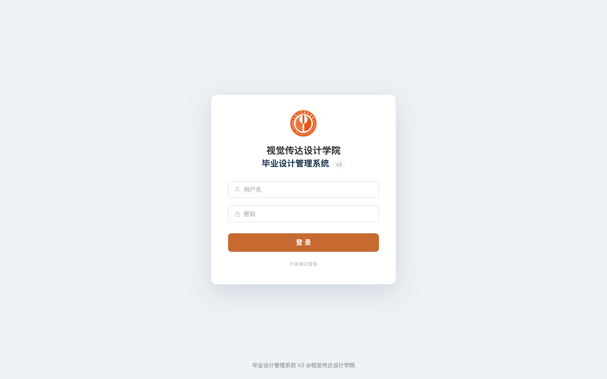
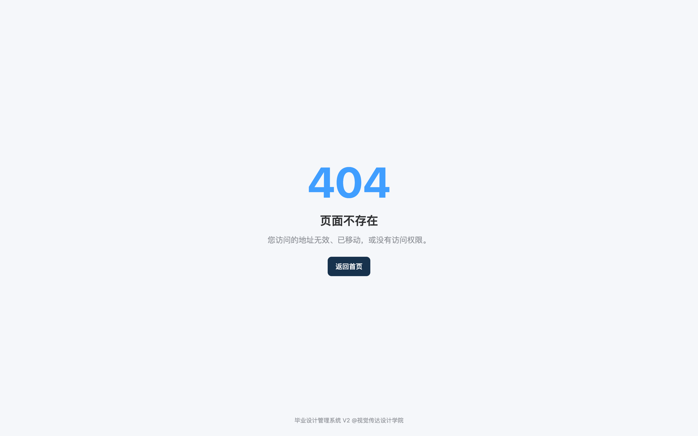
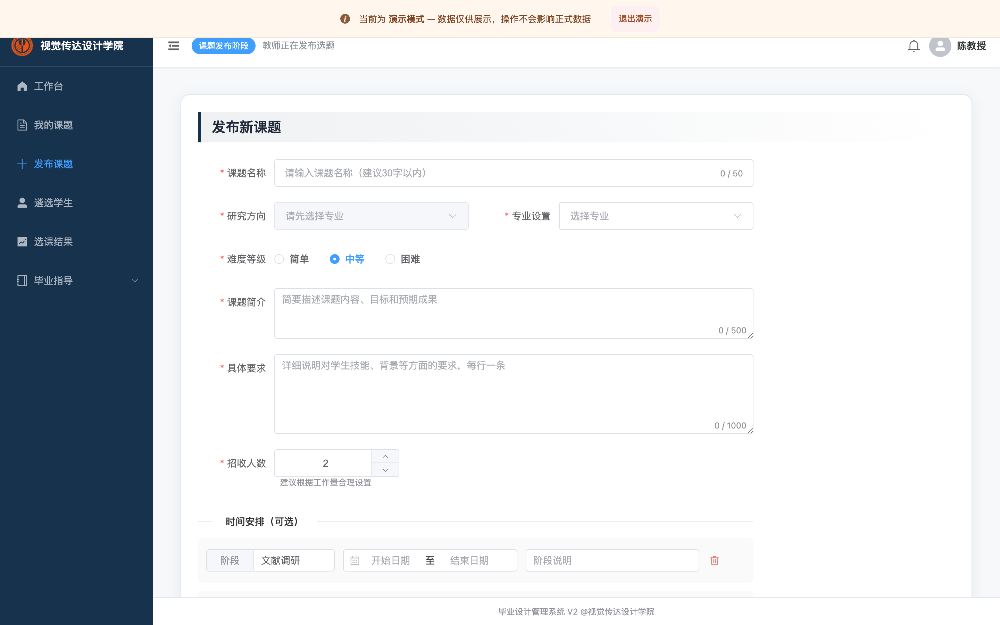
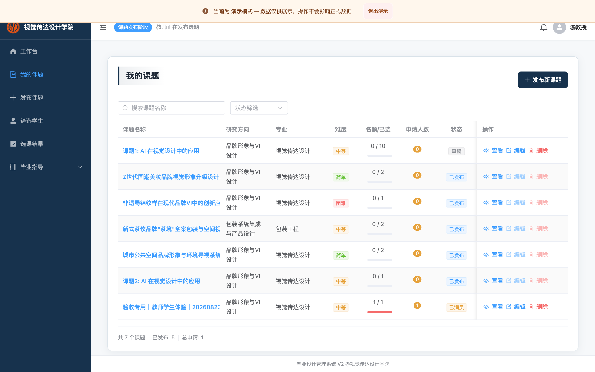
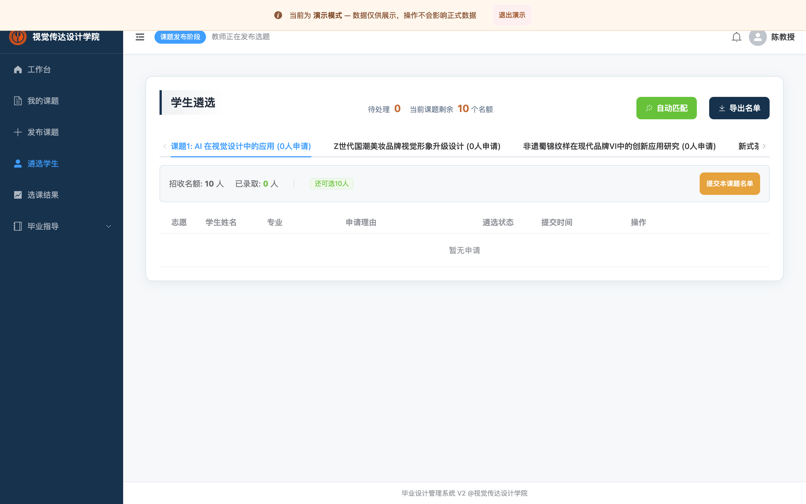
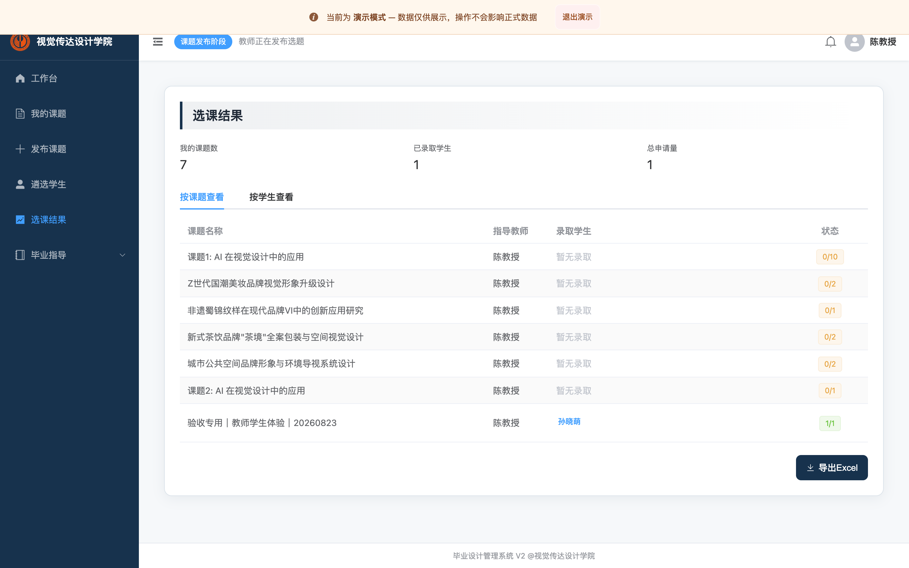
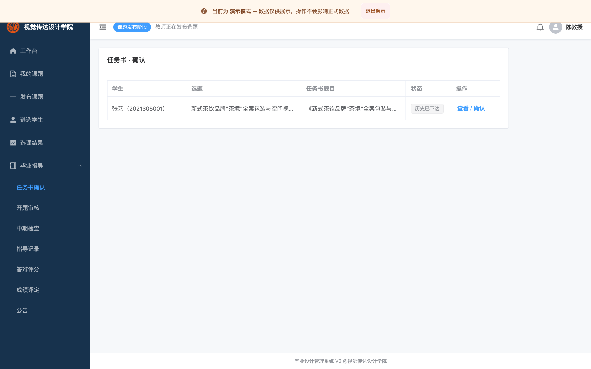
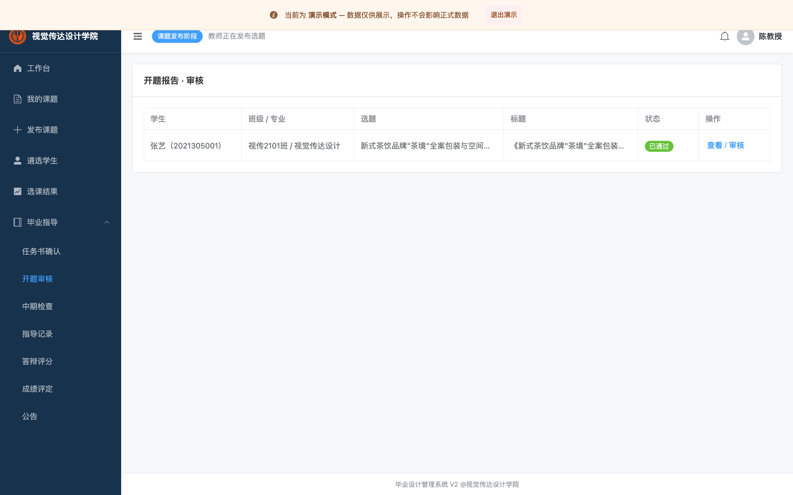
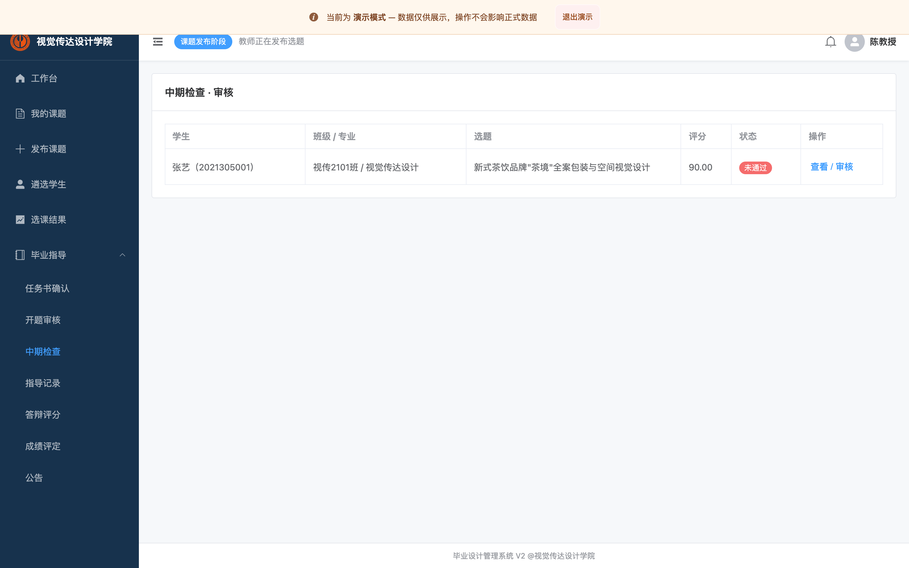

适用：指导本科毕业设计的教师。演示账号
chen / 123456。以下截图以教师“陈老师”界面为例；功能以“当前周期 + 当前阶段”为准。
浏览器打开系统地址（如 http://<服务器>/gpss/），进入登录页：

输入教师账号与密码（演示密码 123456），点击「登录」。
进入教师首页：可查看待办（待审核申请/任务书等）、我的课题数、当前阶段快捷入口：

首页点击「发布新课题」，或左侧「课题管理 → 发布新课题」，进入课题表单：

按序填写：
点击「提交至学院审核」→ 课题进入“待审核”，由管理员在选题库发布；
待管理员发布后，课题状态变为“已发布”，学生才能浏览与填报。
注意：已正式发布的课题会被锁定，不能自行编辑/改状态/删除；如需修改，请联系管理员在“选题库管理”中“撤回发布”后，你才能再次编辑并重新提交。
左侧「课题管理 → 我的课题」查看全部课题及状态（草稿/待审核/已发布/已满员/已关闭）：

行内操作：
顶部可按状态筛选、按名称搜索；“统计区”显示已发布数/总申请。
需处于“遴选/审核”阶段。
首页点击「遴选学生」或左侧「课题管理 → 学生遴选」，进入遴选页：

左侧/顶部选择一个课题，查看该课题下的申请学生。
对每条申请选择处理：
处理完本课题后点击「提交/确认本课题名单」：未选中的学生会自动进入下一志愿/调剂，系统自动释放名额。
规则：若课题已被学生锁定录取，录取结果会反映在你的“选课结果”中；名单一经确认不可由普通操作回退，请谨慎操作。
左侧「课题管理 → 选课结果」，按课题或按学生查看录取结果统计：

点击右上「导出Excel」，系统会按当前教师已录取结果生成 .xlsx 文件下载（文件名：教师名_选课结果_日期）。
左侧「任务书」进入待确认列表（也可从首页待办进入）：

查看学生提交内容，核对无误后点击「确认」；如需修改点击「退回修改」并填写意见。
学生按意见修改后重新提交，再行确认。
左侧「开题报告 / 开题审核」，选择待审学生记录：

查看开题内容，进行审核：
前置提醒：只能审核“其任务书已确认”学生的开题。
左侧「中期检查 / 中期审核」，查看学生已提交的中期记录：

填写评分并审核：
审核结果将以站内通知（中文）推送给学生。